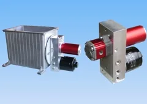

Aggregate
Kühl-, Filter- und Schmiermodule
Einbaufertige Systeme, die Ihren Kreislauf mit Öl oder Wasser-Glykol kühlen, filtern oder schmieren – mit Tank, Pumpe, Wärmetauscher, Ventilen und Filter aus einer Hand.
- bis 3 µmFilterfeinheit möglich
- 6,5–100 lTankgrößen aus der Praxis
- AC & DCAntriebe 12 V bis 400 V
Vier Module, die wir gebaut haben
-

Kühl- und Filtermodul für Getriebeöl
- Filtrierung über Glasfaserfilter mit großer Kapazität
- Kühlung über Edelstahl-Plattenwärmetauscher
- Selbsttätige Wasserregulierung über Thermostatventil
- Öl-Auffangtank 100 l, Zahnradpumpe 16 l/min
- Normmotor 230/400 V AC, 0,75 kW, inkl. Druckbegrenzungsventil
-

Kühlmodul für Wasser-Glykol
- Versorgt eine sensible High-Tech-Anlage mit Torquemotoren
- Kühlung über Edelstahl-Plattenwärmetauscher
- Mehrstufige Kreiselpumpe 75 l/min, 5 bar
- Tankinhalt 44 l, 230/400 V AC, 1,1 kW
-

Filteraggregat für Abtropföl aus dem Prüfstand
- Fördert selbsttätig in den Haupttank zurück
- Filter mit großer Kapazität, bis 3 µm möglich
- Integrierte Elektrosteuerung über Niveauschalter
- Tankinhalt 6,5 l, 230 V AC, 0,18 kW – komplett steckfertig
- Wartungs- und servicefreundlich
-

Aggregat für Lagerschmierung
- Versorgt Wälzlager mit Schmieröl
- Aluminiumblock trägt Motor, Elastik-Klauenkupplung, Zahnradpumpe und Ölfilter
- Zahnradpumpe 1,5 l/min, 10 bar, Tankinhalt 8 l
- Bürstenloser Gleichstrommotor 12 V DC, 60 W
- Optional mit Ansteuerelektronik im Gehäuse
Warum ein fertiges Modul statt Einzelteile?
Wer Pumpe, Tank, Wärmetauscher und Filter einzeln kauft, muss sie selbst aufeinander abstimmen, verrohren und prüfen. Bei uns kommt das Modul als eine geprüfte Einheit: ein Ansprechpartner, eine Dokumentation, eine Lieferung.
- Komponenten sind aufeinander ausgelegt
- Weniger Montageaufwand bei Ihnen
- Ersatzteile und Rückfragen aus einer Hand
Datenblätter & Downloads
- Übersicht Kühl- und FiltermoduleDownload folgt – bis dahin schicken wir es Ihnen gern zuAnfordern: Übersicht Kühl- und Filtermodule
- Fragebogen zur Kühlmodul-AuslegungDownload folgt – bis dahin schicken wir es Ihnen gern zuAnfordern: Fragebogen zur Kühlmodul-Auslegung
Fragen zu Kühl- & Filtermodule?
Beschreiben Sie Ihre Anwendung in ein paar Stichworten oder rufen Sie an – wir legen aus und schicken Ihnen ein Angebot.